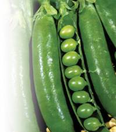
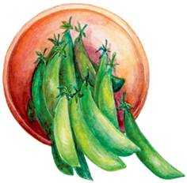
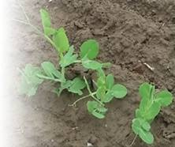
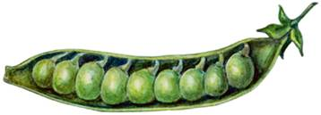
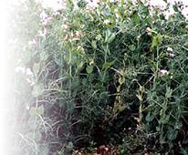
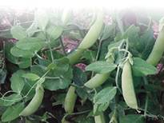

Овощной горох

Горох принадлежит к однолетним растениям из семейства бобовых. Уже в IV веке до н. э. его успешно культивировали в Северо-Западной Индии, которая считается родиной этой распространенной культуры. Сегодня овощеводы более 60 стран выращивают горох на своих полях и огородах. В плодах гороха содержится много ценнейших веществ, необходимых для питания человека. Одних только белков в горохе от 20 до 30 %, легкоусвояемые сахара составляют 20–30 %, имеются также важнейшие аминокислоты: аргинин, метионин и др. Высокое содержание фосфора, необходимое для работы головного мозга, крахмал, соли калия, жирные кислоты, богатый набор витаминов выдвинули горох на одно из первых мест среди популярных овощей во многих азиатских и европейских странах. Народные целители не случайно использовали припарки из гороха для лечения нарывов, различных инфильтратов, фурункулов. Из отваров растения готовились мочегонные лекарства. И в настоящее время медики советуют потреблять не менее 3 кг в год зеленого горошка. Овощные сорта гороха широко используются для консервирования, и он сохраняет основную массу полезных веществ в течение длительного времени.

Горох образует на корнях, так же как и многие другие его сородичи из семейства бобовых, многочисленные клубеньковые образования, фиксирующие атмосферный азот, который становится удобрением. Установлено, что на одной сотке за одно лето после уборки гороха остается в почве до 10 кг минеральногоазота, и таким образом огородник | избавляется от необходимости вносить полторы тонны навоза на этуплощадь.
Глубоко уходящая корневая система гороха доставляет питательные вещества из нижних слоев почвы, одновременно питая и соседние, расположенные рядом с горохом, овощи.

Горох относится к холодостойким однолетникам, которые принято подразделять на 2 группы сортов: лущильные и сахарные. Первые выделяются тем, что на внутренней стороне боба хорошо виден плотный пергаментный слой. Съедобны у них только зерна. У второй группы сортов имеются сочные створки, что дает возможность потреблять плоды целиком. В зависимости от морфологических особенностей выделяют сорта с гладкими, округлыми и морщинистыми семенами, причем последние носят название «мозговой горох». Все растения гороха, независимо от сортов, имеют уходящие в глубь до 1 м от поверхности почвы стержневые корни. Они разветвленные и достаточно мощные, чтобы потреблять влагу и минеральные вещества из нижних слоев почвы.
Для нормального развития растениям требуется длинный световой день. Семена могут прорастать и при температуре 2–6 °C, но оптимальной считается температура 18 °C.
Всходы неплохо переносят непродолжительные заморозки до 5–6 °C. Горох страдает от избытка влаги на тяжелых глинистых почвах, кусты желтеют и корневая система растения сгнивает. В это время горох особенно подвержен грибным инфекциям.
Ценной особенностью культуры является короткий период вегетации, но на юге он несколько удлиняется.
Растения достигают определенной высоты (от 30 до 200 см) в зависимости от особенностей, каждого конкретного сорта.

При низких температурах всходы появляются через 2 недели, при температуре 18 °C – через 5–6 недель. Для дальнейшего роста молодым растениям требуется 15–20 °C.
Высокорослыми считаются те сорта, которые имеют высоту 115–200 см, среднерослыми – 70-115 см и низкорослыми – 30–70 см.
По продолжительности периода вегетации известны сорта позднеспелые (100–125 дней), среднеспелые (85-100 дней) и раннеспелые, или скороспелые (65–85 дней). Очень скороспелые сорта имеют период вегетации всего 40–65 дней.
Для нормального роста гороху подходят нейтральные по кислотности почвы. Полезно внести по стакану золы на 1 м грядки. Во всяком случае это растениям не повредит, особенно если в почве содержатся и минеральные удобрения, в том числе калийные. Одним из важнейших условий высокой урожайности гороха является нейтральная или слабощелочная реакция почвенного раствора.
Почву следует заблаговременно очистить от сорняков, поскольку на засоренных и бедных участках горох дает небольшие урожаи, плоды с мелкими семенами, содержащими мало сахаров, крахмала. Кроме того, они грубы по механическому составу. Особенно опасно засорение почвы в первые декады после появления всходов.
Горох чутко реагирует на культуры, которые произрастали на участке до него.
Нельзя высевать горох на том месте, где эта культура высаживалась в прошлом году. В качестве предшественников не подходят и другие представители семейства бобовых (фасоль, бобы). Зато такие предшественники, как огурцы, томат, капуста, картофель, создадут оптимальные условия для успешного произрастания гороха на участке. Лучше всего возвращать горох на прежнее место через 4 года. Не следует рядом с гороховой грядкой размещать травы, улучшающие плодородие и структуру почвы, например, клевер или люцерну. Это может увеличить численность бактерий и прочих микроорганизмов.
Поскольку горох убирают рано, во вторую половину лета, чтобы площадь не пустовала, ее можно использовать для посева редиса.
После уборки урожая надземную систему гороха следует заделывать в приствольные круги, обогащая тем самым почву легкодоступными удобрениями. Почву следует готовить заранее, осенью: нужно сделать ее глубокую перекопку, как только закончится уборка урожая предшественника гороха. Весной проведите повторное глубокое рыхление.
Горох – замечательная междурядная культура в саду

Лучшими считаются солнечные участки с кислотностью 6–7.
Под осеннюю перекопку вносят по полведра перегноя или компоста, 35 г суперфосфата, 30 г хлористого калия на 1 м.
Лучше сеять горох в несколько сроков, учитывая различную продолжительность периода вегетации сортов. Первый посев начинайте в конце апреля – начале мая, последний – в конце мая. Некоторые любители гороха высевают его и в середине лета, за 2 месяца до заморозков. Цветки и молодые завязи чувствительны к резким понижениям температуры до минусовой. Глубина заделки семян на легких почвах – 4–5 см, на тяжелых – 3 см. Лучшая схема посева – двухстрочная: она удобнее для ухода и уборки. Расстояние между лентами – 50 см, между строчками – 2 см для лущильных сортов. Для сахарных сортов расстояние между лентами – 40 см, между строчками – от 4 до 6 см.
На участке, где горох не возделывался раньше, внесите нитрагин, который является отличным бактериальным препаратом для бобовых культур. Он усилит поглощение азота из воздуха.
Поливы обязательны в период прорастания семян и появления всходов.

Для посева сначала сделайте бороздки, после полива и закрытия бороздок не забудьте накрыть посевы пленкой или плотной бумагой, чтобы обезопасить посевы от птиц. Большинство пернатых поедает только что высаженный горох, даже протравленный ядами.
Агротехника ухода за культурой простая. Горох нуждается в двухразовой подкормке минеральной смесью под полив (15 г хлористого калия, 10 г мочевины и 30 г суперфосфата на 1 м).
Не допускайте появления сорной растительности на участке, во время прополки удаляйте корку после дождей и поливов.
Когда всходы подрастут, подставьте хворостины, лучше с шершавой поверхностью: усики быстрее цепляются за них и поддерживают горох в вертикальном положении.
Если надо пораньше получить зеленый горошек для консервирования, можно сначала высадить рассаду в ящиках или теплице. На 1 м потребуется около 2 тысяч семян. После получения рассады этого количества хватит на площадь не менее одной сотки в открытом грунте.
Для получения рассады посев начните на месяц раньше, чем при безрассадном способе. В открытом грунте предварительно проделайте грядки шириной около 1 м и поперек гряд сделайте бороздки с расстоянием 30 см между растениями. Не забудьте провести предпосадочный обильный полив бороздок.
На гороховом участке с конфигурацией в виде прямоугольника 1 х 20 м потребуется примерно 150 подпорок. Когда горох достигнет высоты 15 см, осторожно поставьте подпорки, чтобы не повредить корневую систему. Осенью подпорки не выбрасывайте – они пригодятся на следующий год.
Через месяц можно собирать урожай зеленого горошка.

Подпорки для гороха можно изготовить из прутьев высотой около 150 см, подойдут прутья ольхи, сосны, осины, ели. Чем больше на них небольших сучьев, тем лучше, удалять боковые побеги на прутьях не надо. Только низкорослые сорта выращивают с использованием подпорок без прутьев.
Убирайте горох осторожно, чтобы не повредить плоды. Уборку проводите выборочно, по мере созревания бобов. Не следует передерживать горошины в бобах слишком долго. Для заготовки семян с собственного огорода оставьте растения на участке до полной биологической спелости.
Для зеленого горошка срок хранения в бобах – 12 часов, а вылущенного – всего 4 часа. После этого горошины теряют сахаристость и приобретают крахмалистость.
После созревания бобов извлеките растение из земли, отряхните от почвы, свяжите в небольшие пучки и храните под навесом или в сухом помещении. Подсушенные бобы отделите от растений, выньте семена и ссыпьте их в полотняные мешочки.